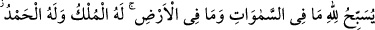
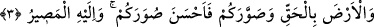
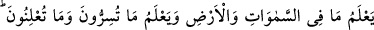
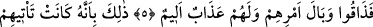
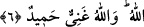

MÜLK O’NUNDUR,
HAMD O’NADIR
Bismillâhirrahmânirrahîm
1. Göklerde ve yerde ne varsa hepsi Allah’ı tesbih eder. Mülk O’nundur. Hamd
O’nadır. O herşeye kadirdir.
2. Sizi yaratan O’dur. Böyle iken kiminiz kâfir, kiminiz mümindir. Allah
yaptıklarınızı görendir.
3. Gökleri ve yeri yerli yerince yarattı. Sizi şekillendirdi ve sûretlerinizi de güzel
yaptı. Dönüş ancak O’nadır.
4. Göklerde ve yerde olanları bilir. Sır olarak söylediklerinizi ve açığa
vurduklarınızı da bilir. Allah kalplerde olanı bilendir.
5. Daha önce inkâr edenlerin haberi size ulaşmadı mı? İşte onlar (dünyada)
yaptıklarının cezâsını tattılar. Onlar için acı bir azap da vardır.
6. (O azâbın sebebi) şu ki, onlara peygamberleri apaçık deliller getirmişlerdi,
fakat onlar: ‘Bir beşer mi bizi doğru yola götürecekmiş?’ dediler, inkâr ettiler ve
yüz çevirdiler. Allah da hiçbir şeye muhtaç olmadığını gösterdi. Allah zengindir,
hamde lâyıktır.
“Göklerde ve yerde ne varsa hepsi Allah’ı tesbih eder.” Göklerde bulunan rûhânî ve
yerde bulunan cismânî varlıklardan hepsi Allah’ı tesbih eder. O’nu kibriyâsına lâyık